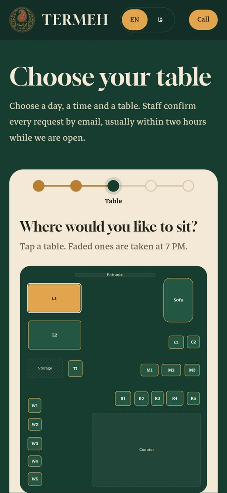
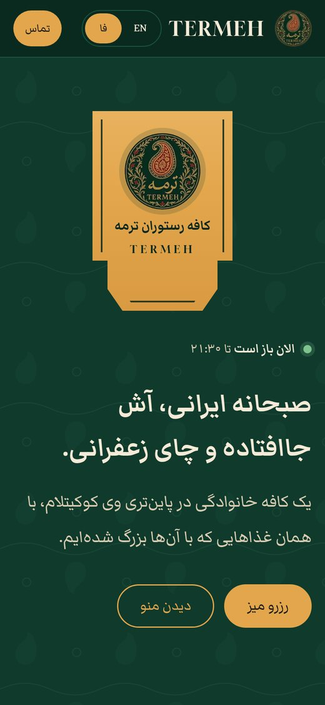
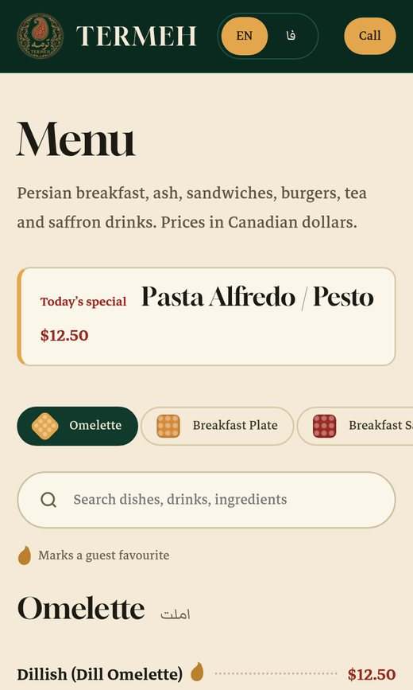

Termeh Cafe & Restaurant
A bilingual restaurant site with real table booking, rebuilt from scratch

Overview
Termeh is a family-run Persian cafe and restaurant on Pinetree Way in Coquitlam, BC. Its guests speak English and Farsi, and it takes a lot of table bookings over the phone. The owners wanted a site in both languages where guests book a real table, and where staff can run bookings, the menu and the hours themselves.
There was an older React and Express version that never launched. I audited it first and found HTML injection in the booking emails, rate limits that would lock out every admin at once behind the host's proxy, secrets with hard-coded fallbacks, and no model of how long a table stays taken. I rebuilt it from scratch and treated each of those findings as a requirement. The new site went live at termehbc.ca in October 2026.
The site



The brief
- English and Farsi everywhere: pages, emails, the admin panel and the staff bot
- Guests choose an actual table, and the restaurant confirms every booking before it counts
- No double bookings, ever, even when two people tap the same table at the same moment
- Staff hear about new requests right away, on their phones, without watching an inbox
- The owners change the menu, hours, closures and booking rules themselves
- Low running cost, and a site that stays up without anyone watching it
What I built
Booking on the floor map
Booking takes five short steps: party size and day, a time grouped into breakfast, lunch and dinner, a table on the floor map, contact details, then a review. I drew the map from the owners' own floor plan. The rules match how the room actually works. One to four guests pick a table, or two pushed-together two-tops. Five to ten pick one of the setups staff have defined. Eleven or more send a group request, and staff arrange the seating. A table is held for 90 minutes, or 120 for nine or more. Bookings need two hours' notice, or a day for large groups. Every one of these numbers can be changed in the admin.
No double bookings
A request is only a request until staff confirm it, but it still holds its tables so nobody else can take them. Each table hold is checked for clashes and written in a single database batch, so two guests racing for the same table can't both get it. Requests that staff don't answer expire on their own and free the table again.
Staff work from Telegram
New requests arrive in a Telegram bot with Confirm and Decline buttons. When they tap Confirm, the guest gets an email with the table, the time and a calendar file. A job runs every ten minutes. It nudges staff about requests still waiting, sends guests a reminder the day before with a cancel link, and lets requests that nobody answered expire.
An admin panel built for a phone
The admin is a small Preact app that also works in Farsi. It has a Today view, a live floor view, and phone and walk-in bookings with clash warnings. Staff can move any booking to other tables. It also has a menu editor (photos are resized in the browser before upload), hours and holiday closures, tables and setups, staff roles, an activity log, and a maintenance switch that tells every linked staff chat who flipped it.
Security and privacy
Passwords are hashed with PBKDF2. Admin logins use signed session cookies, and the forms are rate-limited and protected by Turnstile. Every guest-supplied value is escaped before it goes into an email, and the site sends a strict set of security headers. Booking details are anonymised after twelve months, as the privacy page promises.
Tech stack
It all runs on Cloudflare: one Worker serves the pages and the API. Hosting comes to about $70 a year.
Why it is built this way
The pages are rendered on the server in both languages, so they load fast and search engines can read them, and the only JavaScript sent is for the booking flow and the admin. D1 keeps the data next to the code, and its batched writes make the no-double-booking guarantee simple to reason about. The booking rules are one shared module, so the browser and the server can never disagree about which table is free.
Testing and launch
- Over 120 automated tests run inside the real Workers runtime. They cover the booking rules, the API, emails, the bot and the scheduled jobs. Every push runs them before anything deploys.
- Before launch I made real bookings on the live site in both languages: book, confirm, decline, cancel, and the calendar file. I fixed what turned up, such as Farsi dates in emails.
- Lighthouse on mobile: 100 for accessibility, best practices and SEO
- An uptime check runs every 30 minutes, and errors alert me on Telegram before the restaurant would notice
- I wrote a staff guide in English and Farsi so the team could run bookings from day one
Outcome
Termeh takes table bookings online in two languages, and staff confirm them from their phones in a tap. The owners run the menu, hours and rules themselves.
I'm still their developer. Next up are online pickup ordering and a counter tablet. Staff will use it to accept orders, set prep times, and seat walk-ins on the same floor map.